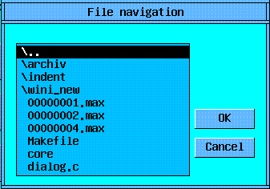
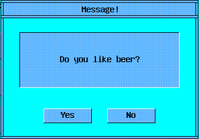

Б и б л и о т е к a Y z o n e

Содержание:
Введение
Yzone - универсальная межплатформенная библиотека для создания графических
модульных приложений для различныx платформ UNIX и Microsoft Windows.
Yzone - библиотека широкого профиля, однако приоритетным в ней является научный,
компонентно-алгоритмический подход.
Представляя библиотеку Yzone, необходимо отметить следующие моменты и
характерные особенности:
Все перечисленное выше позволяет надеяться, что библиотека Yzone будет полезна
широкому кругу программистов: от начинающих до профессионалов, от желающих
написать свою первую графическую программу до разработчиков сложных программных
межплатформенных комплексов.
1. OPEN: оконнo-графические и системные примитивы
В Yzone разработана оригинальная смешанная оконная система (системные и
внутренние окна):
Такой подход позволяет сделать систему более гибкой и универсальной, уменьшить
занимаемые системные ресурсы и ускорить графический визуальный диалоговый
отклик.
В случае простого приложения имеется одно главное системное окно, в котором
средствами внутренних окошек реализован пользовательский интерфейс. В
дополнение возможны также системные диалоговые окна.
Каждое окно-модуль описывается единой "callback"-функцией, тело которой
представляет собой один большой "switch" оператор. Его метки "case" являются
точками входа в оконную процедуру и отвечают за обработку поступающих в модуль
различных сообщений.
В любой программе написанной с помощью библиотеки Yzone должна присутствовать
главная "callback" функция MAIN, которая вызывается первой после запуска
программы.
Таким образом, стандартная программа "Hello World" (с дополнительной кнопочкой)
будет выглядеть так:
/*-------------------------------MAIN-----------------------------------*/
long
MAIN (PFUNC_VAR)
{
switch (message) {
case YCREATE:
YInitWIND ();
YBigWindow (NULL, hello_proc, "Main Window", 0,0, 200,150, 0,0,0,0,
YColor("yellow"));
break;
}
RETURN_TRUE;
}
/*------------------------------hello_proc------------------------------*/
long
hello_proc (PFUNC_VAR)
{
static int hPush1;
switch (message) {
case YOPEN:
case YDRAW:
YDrawRectF (0,0, WND->w,WND->h, WND->color);
YWnd (&hPush1, PUSH, "Hello World!", 20,20, WND->w-40,WND->h-40,
0,0,0,0, YColor("lime"));
break;
case YCLOSE:
break;
case YPUSH:
if (mes1 == hPush1) exit(0);
default: ;;
}
RETURN_TRUE;
}
/*----------------------------------------------------------------------*/
Описание некоторых сообщений
YOPEN - окно открывается;
YDRAW - окно прорисовывается;
YCLOSE - окно закрывается;
YSETFOCUS - окно получает 'фокус';
YKILLFOCUS - окно теряет 'фокус';
YDATAMADE - было изменение в одном из 'дочерних' элементов управления;
YTIMER - интервальные сообщения от установленного таймера;
YKEYBOARD - нажата клавиатурная клавиша;
YLMOUSEDOWN - нажата левая клавиша мыши;
YLMOUSEUP - отпущена левая клавиша мыши;
YLMOUSEMOVE - движение мыши при нажатой левой клавише;
YLMOUSEDOUBLE - двойной 'клик' левой мыши;
YRMOUSEDOWN - нажата правая клавиша мыши;
YRMOUSEUP - отпущена правая клавиша мыши;
YRMOUSEMOVE - движение мыши при нажатой правой клавише;
YLRMOUSEMOVE - движение мыши при нажатых левой и правой клавише;
YKEYWORD0 |
YKEYWORD1 |
YKEYWORD2 | Дополнительные сообщения, зависящие
YKEYWORD3 | от контекста их использования;
YKEYWORD4 |
YKEYWORD5 |
Описание некоторых функций
MAIN - первая (псевдо)оконная функция получающая управление;
1) Группа основных оконных функций:
YWndBig - создать 'реальное' окно в рамках оконного менеджера;
YWnd - создать 'внутренне' окно в рамках OPEN;
YCloseAll - закрыть окно, предварительно закрыв все дочерние;
YSend - послать сообщение в другое окно или модуль;
YGoto - послать сообщение себе (на другую точку входа);
YPost - тоже что YSend, но с предварительной постановкой в очередь;
YSetTimer - запустить 'таймер' для окна;
YKillTimer - остановить 'таймер';
YSetProcess - запустить 'процесс' для окна;
YKillProcess - остановить 'процесс';
YGetData - получить некоторые данные из указанного окна;
YGetFocus - получить идентификатор окна, владеющего 'фокусом';
YSetFocus - установить 'фокус' для окна;
YUpdateWnd - перерисовать окно с обновленными данными;
YWndGroupBegin - 'открывающая скобка' для группы окон (обычно CHECK);
YWndGroupEnd - 'закрывающая скобка';
YDlg - вызвать диалог с указанной оконной процедурой;
YDlgEnd - завершить диалог (закрыть);
YExit - закончить работу с Y/Open;
2) Основные графические примитивы (функции рисования):
YPaintPixell - одиночный пиксел;
YPaintLine - обыкновенная линия (отрезок прямой);
YPaintRectF - прямоугольник (только граница);
YPaintRectB - прямоугольник (только граница);
YPaintRectFB - прямоугольник (закрашенный с границей);
YPaintPolyF - многоугольник закрашенный;
YPaintString - горизонтальная строка;
YPaintArcF - дуга закрашенная;
YPaintArcB - дуга (только граница);
3) Другие системные и графические функции:
YDirRead - получить в виде списка содержимое директории ;
YDirChange - сменить текущую директорию;
YTimeGet - получить системное время;
YTimePause - пауза в миллисекундах;
YBeep - звуковой сигнал;
YRandF - генерация псевдослучайной величины типа 'float';
YBeginGroup - открывающая скобка для группы графических функций;
YEndGroup - закрывающая скобка;
YImageGet - записать образ прямоугольной области экрана в память;
YImagePut - нарисовать сохраненный образ;
YImageFree - уничтожить хранимый образ очистив память;
YSetXorMode - установить режим рисования XOR;
YSetCliping - установить прямоугольную область с режимом отсечения;
YSetFont - установить текущий фонт;
YStringW - длина строки в пикселах;
YStringH - высота строки в пикселах;
YMouseForm - изменение графического образа мышиного курсора;
YPtInRect - попадает ли точка внутрь прямоугольника;
YColorToScale - найти индекс заданного цвета в палитре Scale;
YColor - задать цвет из стандартного набора;
YScale - задать цвет из сплошной палитры;
Работа с цветом
При инициализации графической системы в Yzone происходит резервирование и
установка двух различных цветовых таблиц:
стандартный набор - широко известные общепринятые названия (в текущей версии
используется 16 цветов, первоначально закрепленные за палитрой Windows VGA);
| | "black" |
| "green" |
| | "silver" |
| "lime" |
| | "gray" |
| "olive" |
| | "white" |
| "yellow" |
| | "maroon" |
| "navy" |
| | "red" |
| "blue" |
| | "purple" |
| "teal" |
| | "fuchsia" |
| "aqua" |
сплошная палитра - цветовая "одномерная" палитра, сформированная по некоторому
закону (линейному, логарифмическому и т.д.); ее удобно использовать для
различных задач визуализации распределенных данных.
2. MORE: полезные дополнения и улучшенные GUI функции
В этом разделе описаны некоторые полезные функции. Они расширяют возможности
языка "C" и облегчают программисту его нелегкий труд :-) Но основные улучшения
касаются графических функций; в них введены следующие дополнения:
Описание некоторых функций:
1) Улучшенные графические функции (с масштабированием и сохранением в
Meta и PS форматы):
YDrawLogo - логотип библиотеки Y/Open;
YDrawLine - обыкновенная линия (отрезок прямой);
YDrawRectB - прямоугольник (только граница);
YDrawRectF - прямоугольник (закрашенный без границы);
YDrawRectFB - прямоугольник (закрашенный с границей);
YDrawTriB - треугольник (только граница);
YDrawTriF - треугольник (закрашенный без границы);
YDrawTriFB - треугольник (закрашенный с границей);
YDrawFourB - четырехугольник (только граница);
YDrawFourF - четырехугольник (закрашенный без границы);
YDrawFourFB - четырехугольник (закрашенный с границей);
YDrawPolyF - многоугольник закрашенный;
YDrawCircF - окружность закрашенная (круг);
YDrawXorLine - линия в режиме XOR;
YDrawScale - палитра цветов SCALE в виде прямоугольника;
YDrawColmap - прямоугольная цветовая карта Colmap;
YDrawColmapB - тоже, но с отрисованной границей;;
YDrawSymbol - специальные графические символы и элементы;
YDrawHString - горизонтальная строка;
YDrawVString - вертикальная строка;
YDrawStrings - многострочный горизонтальный текст;
YDrawRectText - текст в центре прямоугольника;
YDrawHStringImp - улучшенная печать строки;
YDrawPixel - одиночный пиксел;
2) Другие функции:
YParInit - инициализация переменной из символьной строки;
YStrCopy - копирование массива строковых переменных;
YStrCmp - сравнение двух строк (возвращает булевское значение);
YError - сообщение об ошибке и аварийное завершение;
YWarning - сообщение об ошибке без аварийного завершения;
YInt - приведение к типу 'int' с правильным округлением;
YPutInCicl - приведение целого внутрь заданного интервала;
YCalcRects - автоматизация размещения прямоугольников в прямоугольнике;
YVertStringH - длина горизонтальной строки (т.е. высота объекта);
3) Функции для работы с 'Colmap':
YColmapCreate - создать;
YColmapInit - инициализировать;
YColmapBeginDraw - задать прямоугольник для вывода в Colmap;
YColmapDrawPixel - рисовать пиксел (если попадает;
YColmapEndDraw - закончить режим рисования в Colmap;
YColmapGet - получить пиксел;
YColmapPut - положить пиксел;
4) Функции для работы с 'Meta':
YMetaCreate - создать;
YMetaInit - инициализировать;
YMetaBegin - начать режим;
YMetaEnd - закончить режим;
YMetaDrawTo - послать для отрисовки в окно;
YMetaToPS - сохранить в PostScript;
YMetaToScr - нарисовать в указанной области экрана;
YMetaW - получить ширину;
YMeta_dlg - оконная функция диалога 'Save_to_PS';
3. WIND: оконно-диалоговые элементы управления
В Yzone все элементы контроля работают достаточно стандартно, за
исключением, быть может,
поля "DECIMAL", управлять которым можно только "мышкой":
- нажатие левой клавиши - уменьшает значение поля,
- а нажатие правой - увеличивает значение поля;
При этом однократное нажатие меняет значение на единицу, а
удержанное нажатие будет производить непрерывное изменение,
причем, тем быстрее, чем дальше отодвигается курсор от исходного
места!
Описание некоторых функций:
YFindFile - вызвать диалог 'FindFile';
YMessageBox - вызвать диалог 'Message';
YWaitBegin - стартовать диалог WAIT;
YWaitEnd - закончить диалог WAIT;
YWaitSend - послать сообщение (сколько сделано) в WAIT;
YPutWnd - 'положить' окно на панель LAYOUT;
PUSH - стандартная кнопка;
CHECK - элемент типа 'флажок' (с крестиком);
LIST - список выбираемых элементов (строковых констант);
EDIT - поле редактирования строковой переменной;
DECIMAL - поле для изменения десятичной переменной;
FLOATS - поле редактирования переменной вещественного типа;
YTEXT - нередактируемое информативное текстовое поле;
COLORS - элемент задания и выбора цвета;
RAMKA - универсальное окно с 'полоской' управляющих кнопок;
SCROLL - линейка прокрутки (для различных целей);
DITTO - пустая 'безсодержательная' оконная процедура (заглушка);
BOOK - 'книжка' с закладками;
ABOUT - стандартная панель с информацией об авторе и программе;
PROCESS - панель с кнопками управления оконным 'процессом';
LAYOUT - панель для размещения на ней других окон;
Далее дано краткое описание некоторых блоков диалога. Обычно
они вызываются как системные окна и являются обязательными для
исполнения.
 Диалог 'Choise color'
Диалог 'Choise color'
сверху - сплошная палитра,
снизу - стандартный набор,
отдельно выделены черный и белый цвет;
Для выбора, просто щелкните левой клавишей мыши на нужном цвете.
 Диалог 'Save_to_PS'
Диалог 'Save_to_PS'
Печать, а точнее сохранение, 'твердой' копии в формате PostScript.
Size(mm) -- панель для задания размера картинки EPS;
можно задать в миллиметрах;
а можно относительно размера стандартного листа бумаги A4;

Диалог 'FinfFile'
Осуществляет навигацию по директориям файловой системы и выбор
файла для последующей работы с ним. Управление -- с помощью
стандартных средств (кнопки, мышь, клавиатура).

Диалог 'Message'
Пользователю выдается некоторое сообщение, на которое требуется
отреагировать (например нажать кнопку "Yes" или "No").
Заключение
Вы коротко познакомились с Yzone - универсальной межплатформенной GUI
библиотекой. От множества подобных библиотек Yzone отличает целый набор
реализованных оригинальных идей и свойств. Yzone - новая, динамически
развивающаяся библиотека и, к сожалению, она еше не свободна от ошибок и неточностей,
что в дальнейшем будет исправлено.
Некоторые элементы управления и блоки диалога также находятся в стадии
доработки, но не дожидаясь окончания этого процесса, пользователи имеют
возможность "подцепиться" к уже развитой библиотеке FLTK
(http://fltk.easysw.com) и воспользоваться ее
средствами GUI.
Для этого достаточно при сборке библиотеки указать соответствующий флаг в
Makefile.
В дальнейшем, конечно, все недочеты будут устранены, а интерфейс развит в
необходимых объемах. Программист, использующий Yzone, забудет о существовании
различных платформ и дополнительных библиотек.
Только Yzone и Вы !! Удачи !!
|